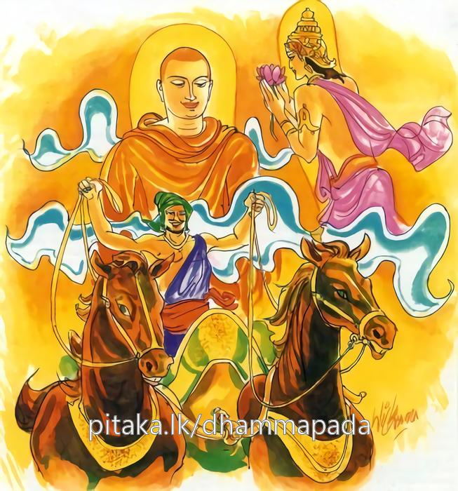

7-5 පස්වන මහාකාත්යායනස්ථවිර වස්තුවයි.
මෙම කතාව සද්ධර්ම සාගරයෙන් ද කියවන්න.
යස්සින්ද්රියානි සමථං ගතානි
අස්සා යථා සාරථිනා සුදන්තා
පහීණමානස්ස අනාසවස්ස
දෙවා’පි තස්ස පිහයන්ති තාදිනො.
යමක්හුගේ (චක්ෂුරාදි) සයිඳුරෝ දක්ෂ රියදුරක්හු විසින් මොනොවට දමනය කරන ලද අජානේය අශ්වයන් මෙන් ශමථයට ගියෝ ද (නිපොපි බවට පැමිණියෝ ද), ප්රහීණ වූ මන් ඇති, ආස්රව රහිත වූ, අට ලෝදහමින් නො සැලෙන, ඒ රහත්හුගේ දැක්ම දෙවියෝ ද (මිනිස්සු ද) කැමැති වන්නාහ.

යස්සින්ද්රියානි ආදි මේ ධර්මදේශනාව බුදුරදුන් පූර්වාරාමයෙහි වැඩහිඳින කාලයෙහි මහාකාත්යායනතෙරුන් අරභයා දේශනා කරන ලද්දකි.
එක් කාලයක භාග්යවතුන්වහන්සේ මහාපවාරණ දිනයක මිගාරමාතා ප්රාසාදයේ යටිමහලෙහි මහසව්වන් පිරිවරා වැඩසිටිසේක. එසමයෙහි මහාකාත්යායන ස්ථවිරයන්වහන්සේ අවන්ති දේශයෙහි වාසයකරති. ඒ තෙරණුවෝ දුරසිටියත් අවුත් බණ අසති. ඒ නිසා සෙසු මහතෙරවරු හිඳගන්නා විට ම හාකාත්යායන් තෙරණුවන්ට අසුනක් වෙන්කොට තබා හිඳගනිත්.
මෙදින සක්දෙව්රජ දෙදෙව්ලොවෙහි දෙව්පිරිස සමග අවුත් සුවඳමලින් බුදුන් පුදා, මහාකාත්යායන තෙරුන් නොදැක, මාගේ ආර්යයන්වහ්නසේ පෙනේනට නැත්තේ ඇයි? දැන් මෙහි වැඩියොත්නම් ඉතා මැනවයි සිතීය. තෙරණුවෝත් එවිටම අවුත් තමන්ගේ අසුනෙහි සිටින හැටියෙන්ම පෙන්වූහ. ශක්රයා තෙරුන් දැක පාගොප්ඇට ළඟින් දැඩිව අල්වාගෙන ස්වාමීන්වහන්ස, මාගේ ආර්යවූ ඔබවහන්සේගේ වැඩමවීම ඉතා මැනවි. මම ඔබවහන්සේගේ පැමිණීම බලාපොරොත්තුවෙන් සිටියෙමියි කියා සුවඳමලින් පුදා එක්පසෙක සිටියේය.
භික්ෂූහු, මේ ශක්රයා මූණ බලා සත්කාර කරන්නෙකි. සෙසු මහාශ්රාවකයන්ට මෙබඳු සැලකිල්ලක් නොකොට මහාකාත්යායනහිමියන් දැක දුවගොස් ගොප්මස ළඟින් අල්වාගෙන, මගේ ආර්යයන්වහන්සේගේ පැමිණීම ඉතා යෙහෙක. මම ඔබ වහන්සේගේ පැමිණීම බලාපොරොත්තුවෙන් සිටියෙමි ආදිය කියකියා දෑතින් මා මඩිමින් පුදා වැඳ එකත්පසෙක සිටියේයයි කියමින් දොස් නැගූහ.
බුදුරජාණන්වහන්සේ ඒ භික්ෂූන්ගේ කථාව අසා, මහණෙනි, මා පුත් මහාකාත්යායන සමාන ඉන්ද්රියසංවරයෙන් යුක්ත භික්ෂූහු දෙවියන්ටත් මිනිසුන්ටත් ප්රියයෝම වෙතියි වදාරා පූර්වාපරසන්ධි ගළපා දහම් දෙසමින් මේ ගාථාව වදාළහ:
අසුන් දමනය කළ රියදුරෙකු මෙන්
යමෙක් තම ඉඳුරන් දැමුවේ නම්
මාන මද කෙලෙස් දැමූ ඔහු
දෙවිමිනිසුන්ට ප්රිය වේ
එහි අර්ථ නම් යස්ස ඉන්ද්රිය දමනයෙහි දක්ෂ භික්ෂුවකගේ සාරථිනා සුදන්තා අස්සා අසුන් දමනයෙහි දක්ෂ රියැදුරෙකු මෙන් ඡ ඉන්ද්රියානි සමථං ෂඩ්ඉන්ද්රියයන් දැමුණු තැවුණු බවට ගතානි පත්වීද තස්ස ඒ භික්ෂුවට නවවිධ මානයන් දුරුකර සිටින බැවින් පහීනමානස්ස, චතුර්විධ කාමාදි ආශ්රවයන් නොමැති හෙයින් අනාසවස්ස ආශ්රව රහිතවූ හෙයින් දෙවාපි පිහයන්ති දෙවියෝත් මනුෂ්යයෝත් එතුමාගේ දැකීමත් පැමිණිමත් ප්රාර්ථනා කෙරෙත්මයයි දේශනාකළසේක.
දේශනාවසානයෙහි බොහෝදෙනා සෝවාන්ඵලාදියට පැමිණියාහුය.